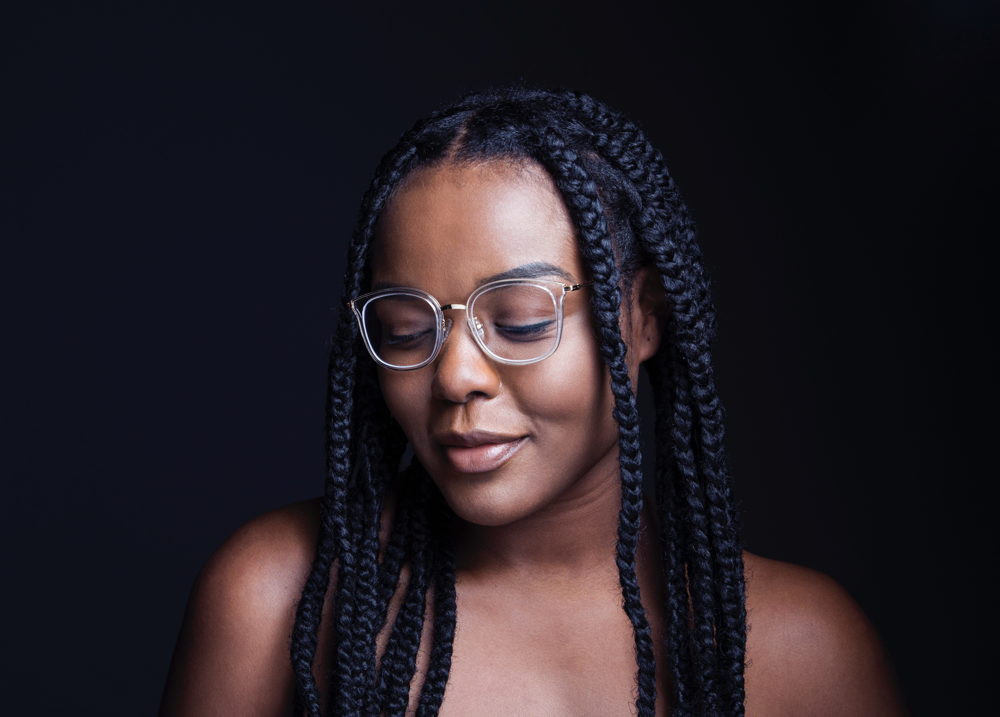

Veronica Jackson. Possibly the love of my life.
I remember when I first saw her, she had come to one of my shows with a group of her friends. I never believed in love at first sight until I met her. I could tell that the comedy scene wasn’t really her thing, and that her friends had dragged her out to try it. She told me later on that she thought they were taking her out dancing. All through my set, she was clearly unamused. A chuckle here and there but that was about it. I wanted so hard to make her laugh, and when I wasn’t able to do it by the end of set. I knew I couldn’t just let her leave without talking to her about it.
I remember being so scared to approach her at first. But once I did, it was the best decision of my life. We talked all night about each others backgrounds, childhoods, aspirations. I had thought that because she didn’t laugh at any of my jokes, that she would end up laughing in my face. However, it was the opposite, she intently listened about who I was talking about and the scenarios and took notes. She works for a non-profit working to correct racial biases around communities, predominantly for children of color, but she also steps in to find justice for adults too.
She doesn’t think some of the things I talk about are joking matters, but little does she know, that in some ways, we’re in the same line of work. Looking to get justice for oppressed individuals who are treated unfairly and unequally.
My struggle is that she’d like to see me stop making jokes about racial injustice I see around, and do and do something more instead. How can I continue to do the secret work that I know is ultimately doing good, but also keep my woman? I'd do anything for her, but am I ready to quit my first true love, comedy?